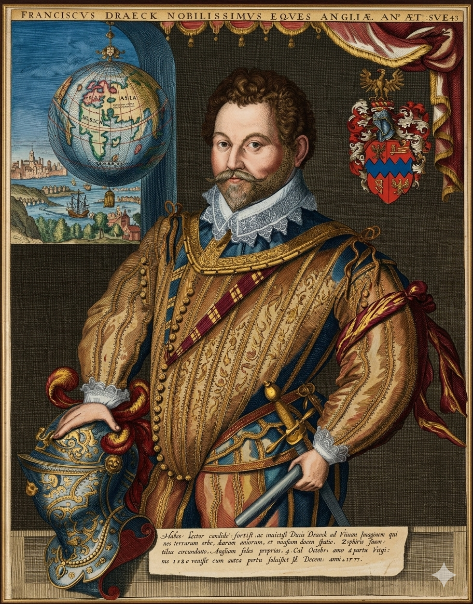

סר פרנסיס דרייק

לחץ על התמונה להגדלה
Portrait of Sir Francis Drake | Source: National Portrait Gallery | License: Public Domain
מקור ומשמעות השם והכינוי (אטימולוגיה מורחבת)
שם פרטי: פרנסיס (Francis)
השם "פרנסיס" מגיע מהשם הלטיני המאוחר Franciscus. משמעותו המקורית היא "איש מהעם הפרנקי" (העם הגרמאני שעל שמו קרויה צרפת).
הקשר פוליטי-דתי: במהלך ימי הביניים המאוחרים ותקופת הרנסנס, המילה "פרנקי" קיבלה משמעות נוספת של "חופשי" (Free). באנגליה הפרוטסטנטית של המאה ה-16, בחירה בשם פרנסיס עבור הילד הבכור ביטאה הצהרת כוונות משפחתית: השאיפה לחירות אישית, דתית ולאומית אל מול ההגמוניה הקתולית והאימפריה הספרדית. עבור פרנסיס דרייק, שחי כל חייו כמורד בממסד הספרדי וכנווט שאינו נכנע לאיש, השם הלם באופן מדויק את המהות הפנימית שלו כאיש חופשי בלב הים.
שם משפחה: דרייק (Drake)
זהו שם משפחה אנגלי עתיק ששורשיו נטועים עמוק במיתולוגיה ובשפה האנגלו-סקסונית.
מקור בלשני: השם נגזר מהמילה האנגלית העתיקה Draca, אשר התפתחה מהמילה הלטינית Draco. הפירוש המילולי הישיר הוא "דרקון" או "נחש מים עצום". בתרבות הרנסנס, הדרקון סימל יצור רב-עוצמה המגן על אוצרות, אך גם מסוגל להמיט חורבן מוחלט באש ובמים.
סמליות אצילה: אף על פי שבשפת היומיום המילה Drake יכולה להתייחס גם לברווז זכר, פרנסיס דרייק דחה פירוש זה מכל וכל. כשזכה לתואר האבירות ועיצב את שלט האצולה שלו, הוא בחר להציג עליו את הדרקון המיתולוגי, כאות לגאוותו בשם שמייצג כוח הרסני כנגד אויבי אנגליה.
הכינוי ההיסטורי: "הדרקון" (El Draque)
הכינוי "אל דראקה" (הדרקון בספרדית) לא היה סתם תרגום של שם משפחתו. הוא היה פרי פיתוח של לוחמה פסיכולוגית מקיפה שהפעילו הספרדים כנגד עצמם. עבור הכתר הספרדי, דרייק לא היה בן אנוש רגיל אלא דמות שטנית, יישות על-טבעית שמסוגלת לשלוט ברוחות ובגלים. הספרדים האמינו שהוא מחזיק ב"מראה קסומה" (Magic Mirror) בארמונו בלונדון, דרכה הוא רואה את מיקומן המדויק של כל ספינות הזהב שלהם באוקיינוס.
השם "אל דראקה" הפך לכלי של אימה; שמועות על הגעתו לנמל מסוים גרמו לפינוי ערים שלמות ולנטישת ספינות מטען יקרות. במאה ה-16, אמהות ספרדיות נהגו להזהיר את ילדיהן בסיפורי מעשיות ש"אל דראקה" יבוא לקחת אותם בלילה אם לא יישנו, עדות לכך שהמיתוס שלו חדר עמוק לתוך התרבות של אויביו.
ילדות מוקדמת: הפליט שצמח בבטן האונייה
פרנסיס דרייק נולד בטאביסטוק (Tavistock) שבמחוז דבון, אנגליה. אביו, אדמונד דרייק, היה איכר פשוט אך חדור להט דתי שהפך למטיף פרוטסטנטי. פרנסיס היה הילד הבכור במשפחה שכללה 12 בנים – נתון שהטיל עליו אחריות הישרדותית כבדה כבר מינקותו.
בגיל 12, עקב העוני המרוד של אביו, נשלח פרנסיס לעבוד כשוליה (Apprentice) לרב-חובל של ספינת סחר קטנה שעסקה בהובלת סחורות לאורך חופי אנגליה, צרפת וארצות השפלה. דרייק הפגין חריצות וכישרון ניווט כה נדיר, שבעל הספינה הערירי ראה בו את בנו. במותו, הוא הוריש לפרנסיס הצעיר את הספינה כולה. כך, עוד בטרם הגיע לגיל 20, הפך דרייק לבעל עסק עצמאי ורב-חובל מנוסה, שהכיר כל סלע וכל זרם במים האירופיים.
התפנית המכוננת: ההפיכה לשודד ים (Privateer)
בתחילת דרכו המקצועית, דרייק שאף להיות סוחר ימי לגיטימי. הוא הצטרף לצי של קרובי משפחתו, משפחת הוקינס, ועסק במסעות סחר מורכבים באוקיינוס האטלנטי. אולם, אירוע אחד של בגידה בינלאומית שינה את מהלך חייו ואת ההיסטוריה הימית של אנגליה לנצח.
האירוע הזה הצית בדרייק יצר נקמה בוער. הוא הגיע למסקנה שלא ניתן לסחור עם ספרד בשלום ושממלכתו של פיליפ השני היא ממלכה של רשע ובגידה. הוא נדר נקמה אישית בכתר הספרדי. הוא הפסיק להיות סוחר והפך ל"פריבטיר" (Privateer) – שודד ים המצויד בכתב הרשאה מלכותי, המנהל לוחמת גרילה ימית וכלכלית נגד ספרד כחלק ממאמץ המלחמה הלאומי.
הדרך לארמון: כיצד שמעה עליו המלכה ופגישתם הראשונה?
המודיעין של וולסינגהם
שמו של דרייק החל להופיע בדוחות המודיעין שהוגשו למלכה אליזבת הראשונה על ידי סר פרנסיס וולסינגהם, ראש רשת הריגול והשר הבכיר שלה. וולסינגהם זיהה בדרייק את השילוב המושלם של פנאטיות דתית, גאונות בניווט וכישרון צבאי. דרייק הגיש למועצת הכתר דוחות מפורטים על חולשת ההגנות הספרדיות באיי הודו המערבית, והמלכה, שהייתה זקוקה נואשות לזהב כדי לממן את הגנת הממלכה, ראתה בדרייק את האיש שיכול למלא את אוצרה מבלי שהיא תצטרך לקחת עליו אחריות רשמית.הפגישה הראשונה בארמון (סוף 1576):
הפגישה נערכה בחשאיות מוחלטת בחדר פרטי בארמון, ללא נוכחותם של שרים רבים כדי למנוע הדלפות לספרדים. דרייק הובא לשם על ידי וולסינגהם. המלכה אליזבת, שנודעה בחושיה החדים וביכולתה לזהות אנשים נועזים, ביקשה לשמוע ממקור ראשון על תוכניתו המטורפת לחדור לאוקיינוס השקט דרך מצר מגלן.התיעוד ההיסטורי מספר כי המלכה אמרה לו ישירות: "דרייק, הייתי רוצה מאוד לנקום במלך ספרד על הנזקים שעשה לי". היא העניקה לו מימון אישי סודי של 1,000 כתרים מזהב, מה שהפך אותה לשותפה עסקית מלאה בשוד העתידי. באותה פגישה נכרת "חוזה ג'נטלמנים" סמוי: המלכה הבטיחה לדרייק תהילה והגנה אם יצליח להביא עושר, אך הבהירה שאם ייכשל או ייתפס, היא תתכחש לו לחלוטין ותציג אותו כפיראט עצמאי הפועל בניגוד לפקודותיה. דרייק יצא מהחדר לא רק כמלח, אלא כזרוע הסודית והארוכה של המלוכה האנגלית.
המרדף אחר הזהב: השוד הנועז של שיירת הפרדות (1572-1573)
זהו האירוע שהוכיח למלכה ולעולם שדרייק הוא "הדרקון" המיתולוגי בהתגלמותו. כדי להבין את השוד, יש להבין את "צוואר הבקבוק" של הכלכלה העולמית באותה עת: פנמה.
השלל שנקבר באדמה: השלל היה כה כבד ואדיר, שדרייק ואנשיו לא יכלו לשאת את כולו בחזרה לספינות דרך הביצות הטובעניות. הם מילאו את כיסיהם בזהב ובאבנים יקרות, ואת טונות הכסף הנותרות הם קברו באדמה תחת שורשי עצים וסלעים בג'ונגל (חלק מהכסף הזה לא נמצא מעולם). דרייק חזר לאנגליה כגיבור לאומי וכאיש עשיר להפליא, והוכיח לאליזבת שספרד פגיעה בנקודה הרגישה ביותר שלה – הכיס.
מסע הקפת העולם (1577-1580): נסיבות ומטרות אסטרטגיות
חשוב להדגיש: המסע ההיסטורי של ה-Golden Hind ב-1577 לא תוכנן במקור כ"מסע מדעי להקפת העולם". הוא היה מבצע צבאי-כלכלי במסווה של משלחת חקר.
מורשת: תגליות גיאוגרפיות ומהפכת הלוחמה הימית
1. מעבר דרייק (Drake Passage)
במהלך המסע הגדול, סערה אימתנית דחקה את ספינתו של דרייק דרומה מארץ האש. הוא גילה שקיים מעבר מים פתוח, רחב וסוער באופן קיצוני מדרום ליבשת אמריקה הדרומית. גילוי זה הפריך את התפיסה הגיאוגרפית העתיקה (של תלמי) כאילו אמריקה הדרומית מחוברת ליבשת דרומית דמיונית ענקית. מעבר דרייק, המחבר בין האוקיינוס האטלנטי לשקט, נחשב עד היום למקום המאתגר והסוער ביותר בעולם למעבר ספינות.
2. המצאת הלוחמה הימית המודרנית
דרייק המציא מחדש את הדרך שבה נלחמים בים. הוא פיתח את טקטיקת ה-Broadside: במקום השיטה הישנה של הסתערות חזיתית ולחימת פנים-מול-פנים על הסיפון, דרייק השתמש בספינות קטנות, מהירות ומתמרנות שיירו מטחי תותחים מדפנות הספינה תוך כדי תנועה מהירה. בניצחון הגדול על הארמדה הספרדית ב-1588, טקטיקה זו הוכיחה את עליונותה המוחלטת ושינתה את האופן שבו ציים נלחמים עד לימינו.
מקורות וביבליוגרפיה (אימות מחקר אקדמי)
- "The World Encompassed by Sir Francis Drake" (1628): הדיווח הרשמי שפורסם על ידי אחיינו של דרייק, המבוסס על היומנים המקוריים של הכומר פרנסיס פלטשר.
- "Sir Francis Drake" (John Sugden, 1990): הביוגרפיה המחקרית המוערכת ביותר, המפרטת את הקשרים הכלכליים עם משפחת הוקינס ואת הדינמיקה עם המלכה אליזבת.
- British Library Research Archive: מסמכים מקוריים מהמאה ה-16 המתעדים את המינוי הסודי של דרייק ואת הדיווחים המודיעיניים של סר פרנסיס וולסינגהם.
- "The Secret Voyage of Sir Francis Drake" (Samuel Bawlf, 2003): מחקר מעמיק אודות גילוייו בחוף המערבי של צפון אמריקה.
- National Maritime Museum (Greenwich): ניתוח טכני של מבנה הספינה Golden Hind והטקטיקות הצבאיות בקרב מול הארמדה.